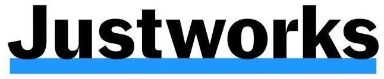
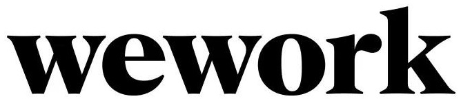
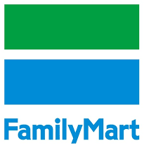
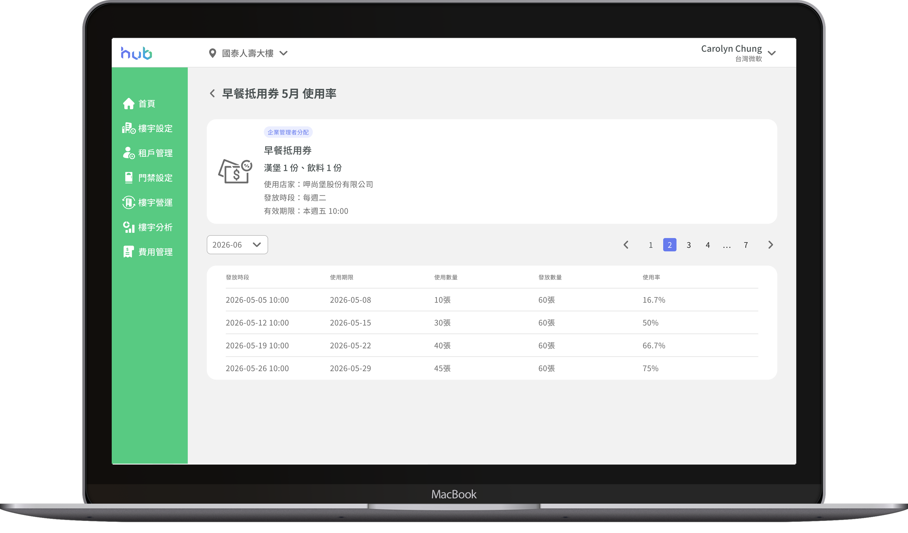

hub 優惠券服務
將人工發放轉為線上管理
串聯樓管、企業與員工的優惠券使用流程
從人工發放走向線上化
hub 以整合辦公多元服務為核心，讓企業透過線上平台管理契約與使用各項辦公服務。
其中，優惠券是企業契約中約定的服務權益，由承辦依契約內容定期發放。由於優惠券為新服務，初期以人工方式發放，且尚未建立明確的作業 SOP，實際執行過程中逐步調整。
因此本次專案希望將優惠券發放流程搬到平台上，建立完整的線上流程，降低人工處理成本。

流程改善與創造服務價值
我們期望透過優惠券流程線上化：
降低營運成本
減少優惠券印製、倉儲及人工管理成本。
累積使用數據
掌握優惠券使用狀況與租戶偏好，作為後續服務優化依據。
擴大平台服務價值
提供符合租戶需求的優惠，同時增加商家曝光與潛在客流，吸引更多商家與企業租戶加入，持續擴大平台服務價值。
重新梳理流程與角色需求
釐清現有流程
原本以人工方式發放，缺乏明確 SOP，需要重新梳理現有作業流程與規則。
理解不同角色需求
優惠券從發放到使用會經過不同角色，需要了解各角色在實際情境中的任務與需求。
找到合適的產品流程
除了符合現有作業，也需要參考市場上的優惠券服務，找出適合 hub 的操作方式與產品架構。
釐清角色需求到建立產品架構
從不同角色在優惠券流程中的參與情境出發，了解各自的主要任務：
樓管｜發放優惠券
現場協助租戶發放優惠券。
承辦｜查看使用成效
查看優惠券發放與使用情況，作為後續規劃參考。
企業管理者｜分配優惠券
將企業取得的優惠券分配給員工。
員工｜兌換優惠券
查看優惠券並到店完成兌換。
進一步將各角色的使用情境拆解，並參考市場上的優惠券服務，整理出四個核心需求：
需要設定優惠券資訊、數量與期間。

需要掌握分配對象、數量與剩餘額度。

需要快速找到優惠券並完成兌換。

需要掌握發放、分配與兌換數量。
將優惠券依實際使用流程整理，從準備與發放開始，逐步進入分配、兌換與追蹤：
準備與發放
樓管準備優惠券並依時間發放至企業。
分配
企業管理者分配給員工。
兌換
員工至店家出示兌換。
成效追蹤
承辦查看發放與兌換狀況。
從優惠券建立開始，串起樓管、企業管理者與員工的使用流程，讓優惠券從「發出去」到「實際使用」都有對應的管理方式。
建立完整的優惠券流程
針對「準備與發放 → 分配 → 兌換 → 成效追蹤」四階段，我們整合出對應的解法與價值：

準備與發放
解法標準化設定流程，依指定時間由自動發放給企業。
價值降低人工整理及發放作業。
分配
解法預先設定員工名單，系統依指定時間自動發放優惠券給員工。
價值減少重複分配操作，降低人工管理成本。
兌換
解法依優惠券狀態與到期時間分類，並提供店家、優惠券名稱搜尋。
價值縮短員工找券時間，提升兌換便利性。
成效追蹤
解法集中呈現優惠券發放、兌換紀錄。
價值快速掌握發放與使用情形，累積數據資料作為後續服務優化依據。
驗證實際使用體驗
各租戶需要多少優惠券、什麼時候發，都可以直接在系統裡處理，不用另外整理表單。站台會依設定好的時間和數量處理發放，比較不用自己記錄，也比較不容易漏掉。可以直接看到優惠券用了多少、剩多少，後續要確認發放狀況也方便很多。
可以看到還有多少優惠券可以分配，分給員工之後也比較好確認剩餘數量。
可以看到各優惠券的使用狀況，之後也能依使用情形跟樓管反映，希望增加不同類型的優惠券。
整體使用起來很直覺，沒有太多操作成本，也能快速找到想要的優惠券。
延伸更多服務價值
-
1
建立優惠券使用狀況儀錶板：視覺化發放、分配與兌換數據，透過圖表掌握成效。
-
2
擴大商家與企業租戶價值：串聯更多商家與優惠，讓企業依需求選擇適合的福利。
-
3
導入手機 Wallet 管理優惠券：將優惠券整合至手機 Wallet，讓員工快速查、使用。
從流程執行到產品思考
回顧整個專案，有三個地方讓我對「把流程搬上平台」這件事有了更完整的理解：
先釐清規則，再系統化
原以為只是把人工流程搬上平台，實際梳理後才發現，先釐清原有作業規則，才能決定哪些流程適合系統化。
從角色情境思考產品
不同角色關注的事情不同，從樓管、承辦、管理者到員工的完整流程思考，才能找到真正需要解決的問題。
上線後才是驗證的開始
先建立完整流程，再透過實際使用數據與回饋，持續調整後續功能。
.png)
PicCollage Redesign
從創作工具到情感連結平台——以主動觸發與情感累積策略，重塑拼貼的長期價值